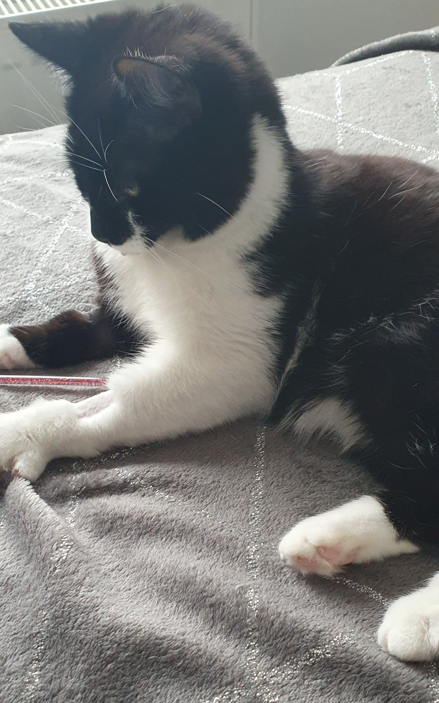
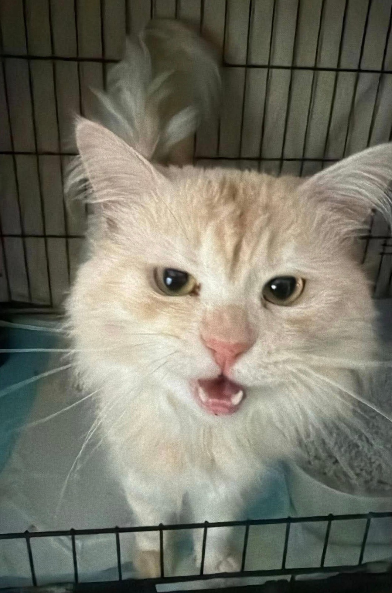
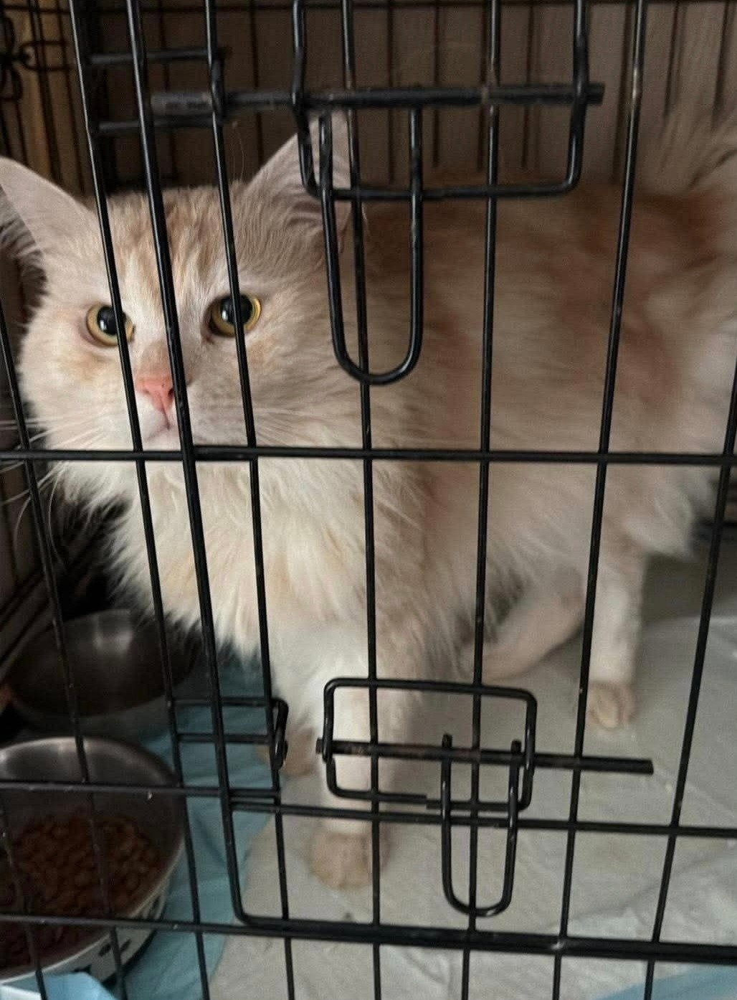

Mickey
Mickey is a gorgeous loving boy of approximately 2 years old.
He has a good appetite and is litter trained.
We are looking for a safe home away from main roads, or a home with an enclosed garden.
He has been neutered, microchipped is fully vaccinated, including FeLV (feline leukaemia).
If you are interested in meeting Mickey, please complete the CAT ADOPTION FORM.
Thank you.

Mickey
Percy
Percy is a two year old White Smoke Maine Coon. He is a big softy and gets on with other cats and children aged between 2-16 years old.
Percy will need to be kept as an indoor only cat in a dog free home.
This is a private rehome, and subject to home checks.
If you are interested in meeting Percy, please either Message or WhatsApp Karen Sykes directly.
Thank you.


Percy